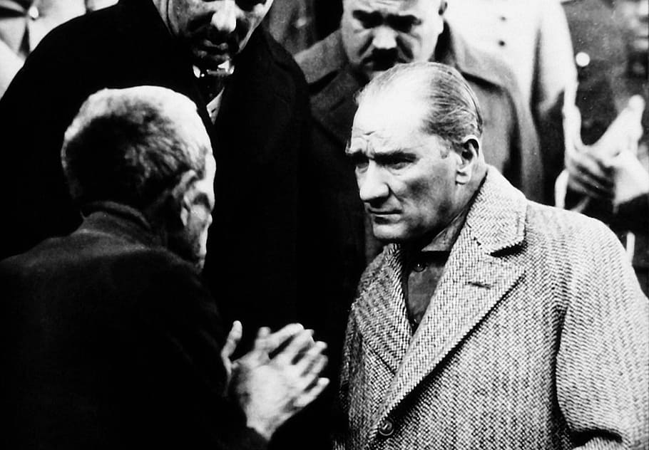

M.Kemal Atatürk
The founder of modern Republic of Turkey

M.Kemal listens a citizen.
Here are some reforms of M.Kemal Atatürk made:
- Political Reforms
- Abolishment of the Sultanate (1 November 1922)
- Declaration of the Republic (29 October 1923)
- Abolishment of Caliphate (3 March 1924)
- Social Reforms
- Women were given equal rights with men (1926-1934)
- The Revolution of Headgear and Outfit (25 November 1925)
- Closing of dervish lodges and shrines (30 November 1925)
- The surname law (21 June 1934)
- Abolishment of nicknames, pious and royal titles (26 November 1934)
- Adoption of the International calendar, time and measurements (1925-1931)
- Juridical Reforms
- Abolishment of the Canon Law (1924-1937)
- Instating the new Turkish Civil Code and other legislation to suit secular order (1924 - 1937)
- Educational and Cultural Reforms
- Integration of education (3 March 1924)
- Adoption of the new Turkish alphabet (1 November 1928)
- Establishment of the Turkish Language and Historical Societies(1931-1932)
- Organization of the university education (31 May 1933)
- Innovations in fine arts
- Economical Reforms
- Abolishment of old taxation laws.
- Encouragement of the farmers.
- Establishment of model farms.
- Legislation of the Encouragement of the Industry Law and establishment of Industrial Corporations.
- Implementing First and Second Development Plans (1933-1937), construction of new highways to reach every corner of the country.
To see me does not necessarily mean to see my face. To understand my thoughts is to have seen me.
-- Mustafa Kemal Atatürk